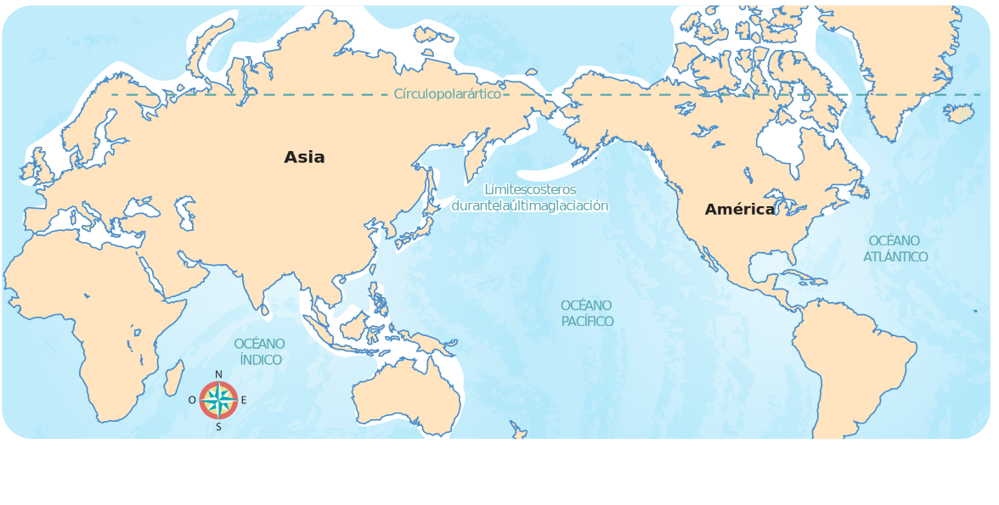

Ubico el pasado mesoamericano
Encierra en el mapa el estrecho de Bering.

Marca así  las culturas mesoamericanas.
las culturas mesoamericanas.
las culturas mesoamericanas.Colorea de azul los nombres de los dioses mesoamericanos.
Subraya la razón por la que iniciaron los viajes de expedición de los españoles y los portugueses.
Marca así la fecha de la llegada de Cristóbal Colón al continente americano.
la fecha de la llegada de Cristóbal Colón al continente americano.Escribe el nombre del conquistador de México-Tenochtitlan.